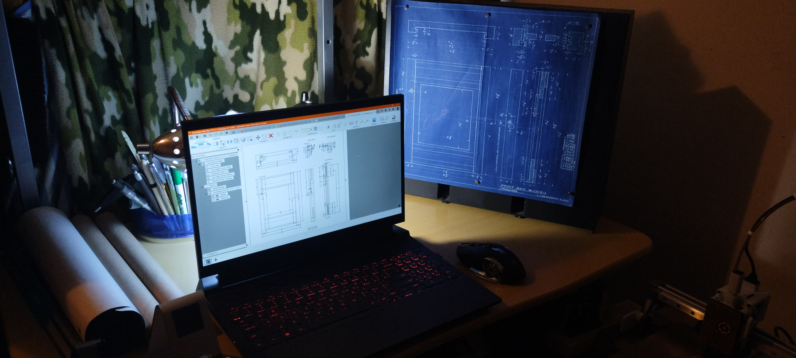

Hey there! I'm Ben Hackl, a 19 year old human currently trying to make sense of the world while studying at UNCC. I specialize in Computer Aided Design and research, which basically means I drink a lot of Red Bull and pretend to know what I'm doing. When I’m not busy doing homework, you can usually find me at my robotics club while passionately arguing about how horrible CS majors are at CAD. I have an irrational love for rock collecting, and I believe that Jesse Welles is the next Bob Dylan. My current mission in life is to sleep, or at the very least, survive drinking 7 Red Bulls in order to beat my previous record. I’m always up for learning new things, taking on weird challenges, and maybe, just possibly, figuring out how to quit my caffeine addiction.
